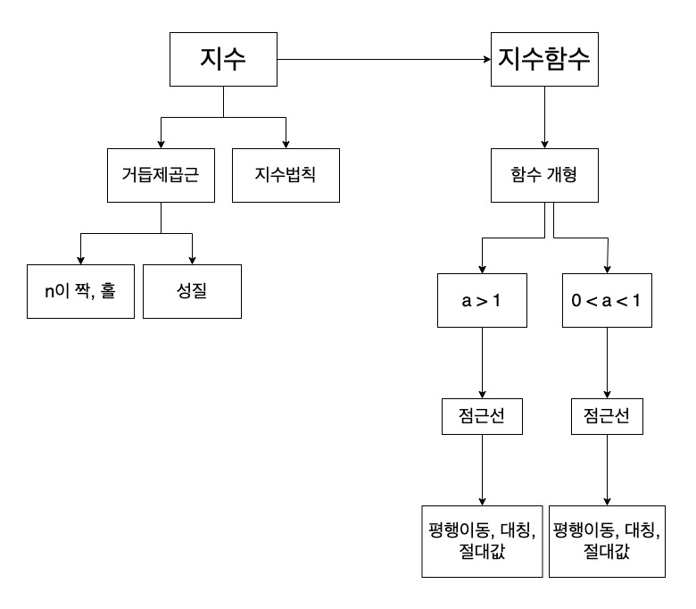
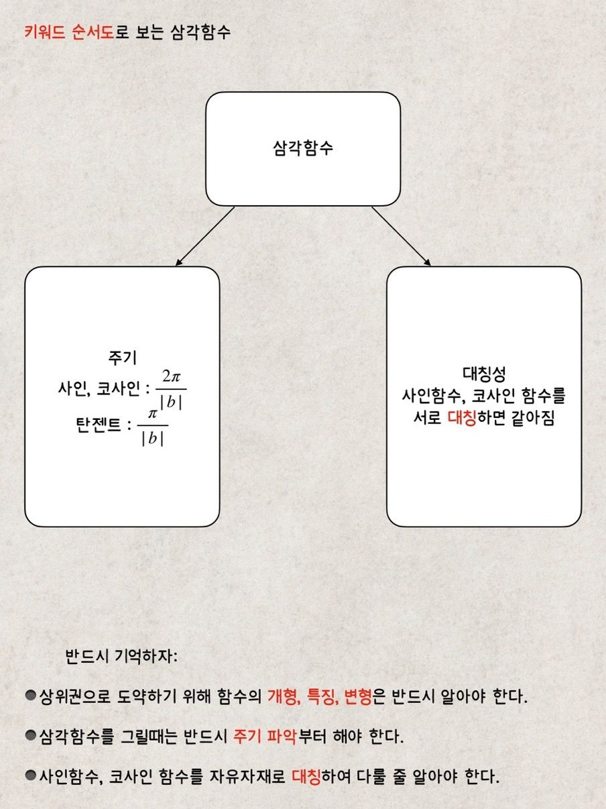

METHOD 01
키워드 순서도 공부법
개념을 노트에 그대로 옮겨 외우면 시간이 지나며 잊고, 알아도 문제의 의도가 보이지 않습니다. 대신 개념을 핵심 키워드로 줄이고, 키워드끼리 이어지는 순서도로 정리합니다.
예를 들어 ‘지수’라는 단어를 보면 거듭제곱근, 지수법칙, 지수함수가 함께 떠올라야 합니다. 외울 양은 크게 줄고, 키워드 하나로 세부 개념이 연상되니 오래 기억됩니다. 문제 접근이 빨라지면 풀이 속도도 자연스럽게 빨라집니다.
지수함수→함수 개형→a > 1→점근선→평행이동·대칭·절댓값

